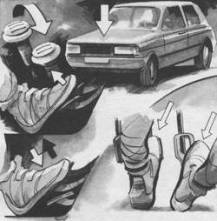

Повышение управляемости автомобиля перед поворотом
Одна из типичных критических ситуаций возникает при входе в поворот на чрезмерной скорости. Результатом такой ошибки является частичная потеря управляемости – снос передних колес или боковое скольжение. Автомобиль выносит на внешнюю сторону полотна дороги. Неопытный водитель чаще всего реагирует на экстремальную ситуацию двумя последовательными ошибками: вначале резким поворотом рулевого колеса внутрь поворота, а затем торможением с полным блокированием колес. Следствием этого является полная потеря управляемости. Автомобиль по касательной выходит из поворота и терпит аварию.
Вернуть потерянную управляемость сложно даже для высококвалифицированного водителя, так как за доли секунды нужно прекратить торможение, выровнять колеса и выполнить повторный вход на наружной стороне поворота, преодолевая собственные эмоции и страхуясь от падения.
Рецепт преодоления критической ситуации связан с опережающими действиями, позволяющими перед входом в поворот существенно повысить управляемость за счет искусственной загрузки передних колес весом автомобиля. Спортсмены шутят, что перед поворотом нужно “положить на передний капот два мешка картошки”. Эта загрузка достигается следующими приемами:
– торможение двигателем (включением перед поворотом понижающей передачи);
– дросселированием (резким “закрытием газа”);
– торможением (кратковременным усилием, вызывающим “клевок” автомобиля);
– торможением левой ногой при открытом дросселе.
Однако не следует забывать, что действие загрузки продолжается всего 0,1–0,2 с, так как сжатые элементы подвески тотчас распрямляются. В связи с этим маневр должен следовать тотчас после загрузки. Пауза может привести к нейтрализации приема или к ухудшению управляемости, если маневр будет начат в тот момент, когда пружинящие элементы распрямляются. Поэтому в автомобильном спорте принято тормозить в последний момент. Это дает возможность очень резко начать поворот, используя эффект загрузки.
Многие водители сталкивались в своей жизни с явлением, когда в хорошо знакомый поворот автомобиль вчера входил без проблем, а сегодня плохо слушается рулевого управления. Если связать эти ситуации с явлениями загрузки и разгрузки передних колес, то легко понять, что в одном случае загрузка точно сочеталась с фазой входа, а в другом торможение оканчивалось рано, передние колеса разгружались реакцией сжатых элементов подвески, а в результате потеря управляемости и скольжение колес.

Повысить управляемость при входе в поворот на максимальной скорости вы сможете, применив очень простой прием. Перед началом поворота управляемых колес, загрузите их весом автомобиля, применив для этого один из приемов торможения двигателем или рабочим тормозом.
Ваша безопасность существенно возрастет, если при входе в поворот вы сумеете соединить три элемента техники “поворот-загрузка-тормоз”
Рекомендуемый прием может быть успешно применен на длинном крутом повороте многократно в режимах: подход, загрузка, вход, повторный вход, дуга и т. д. Этот тактический прием носит название “двойной вход” (см. прием 22) и позволяет существенно повысить безопасность сложных поворотов.